Como usar o MTerminal
Guia para o dono do estabelecimento e para quem atende: da instalação ao dia a dia no salão, em linguagem simples e com as telas do aplicativo.
1.Antes de começar
O MTerminal transforma um celular ou tablet Android no microterminal de pedidos do seu estabelecimento. Ele não tem cardápio nem pedidos próprios: mostra e envia informações para o sistema de automação comercial que você já usa (o programa do caixa/PDV). Por isso, você vai precisar de:
- um celular ou tablet com Android 7.0 ou mais recente;
- um sistema de automação que trabalhe com microterminais pela rede (protocolo VT100). Se tiver dúvida, pergunte ao fornecedor do seu sistema;
- o aparelho conectado ao mesmo Wi-Fi do computador onde o sistema roda;
- o endereço IP e a porta do servidor de microterminais, que o fornecedor do sistema informa.
Use os 7 dias grátis para testar com o seu sistema antes de comprar. Se o seu fornecedor precisar de detalhes técnicos, envie para ele a página Documentação para Integradores.
2.Instalar o aplicativo
- Abra a Google Play no aparelho e procure por MTerminal.
- Toque em Instalar. O download e o teste grátis não têm custo.
- Toque em Abrir. Você pode instalar em quantos aparelhos quiser; cada um funciona como um terminal.
3.Primeira abertura e teste grátis
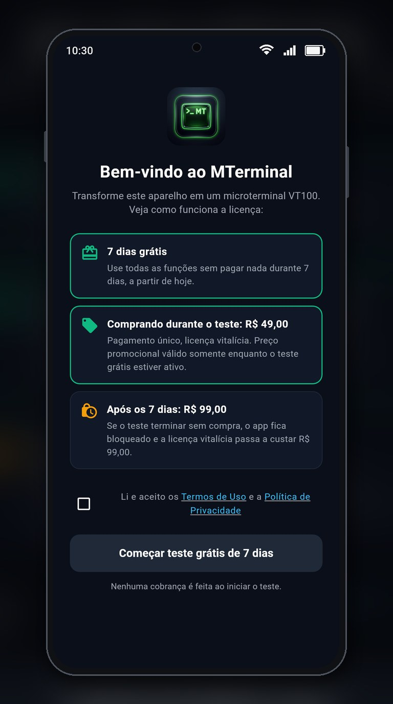
Na primeira vez que você abre o app, aparece a tela de boas-vindas explicando como funciona a licença:
- 7 dias grátis com todas as funções, a partir de hoje;
- comprando durante o teste, a licença vitalícia custa R$ 49,00;
- depois dos 7 dias, a licença custa R$ 99,00 e o app fica bloqueado até a compra.
- Leia os Termos de Uso e a Política de Privacidade (toque nos links).
- Marque “Li e aceito os Termos de Uso e a Política de Privacidade”.
- Toque em “Começar teste grátis de 7 dias”. Nenhuma cobrança é feita nesse momento.
4.Conectar ao sistema da loja
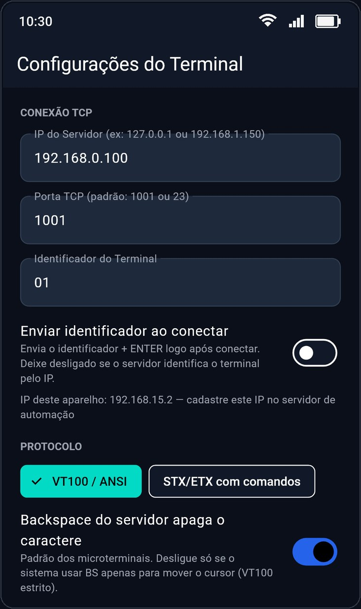
Toque na engrenagem (⚙) no canto superior direito para abrir as Configurações e preencha:
- IP do Servidor: o endereço do computador onde roda o sistema (ex.:
192.168.0.100). - Porta TCP: a porta do servidor de microterminais (muitos sistemas usam
1001ou23). - Identificador do Terminal: um nome ou número para você reconhecer o aparelho (ex.:
01,SALÃO 2). - Toque em “Salvar e Reconectar TCP”, no fim da tela.
A maioria dos sistemas reconhece cada terminal pelo IP do aparelho, mostrado logo abaixo, em “IP deste aparelho”. Passe esse número para o fornecedor do sistema cadastrar. Para ele não mudar, peça para fixar o IP no roteador (reserva de DHCP).
Deixe “Enviar identificador ao conectar” desligado, a não ser que o fornecedor do sistema peça para ligar.
5.Conhecendo a tela
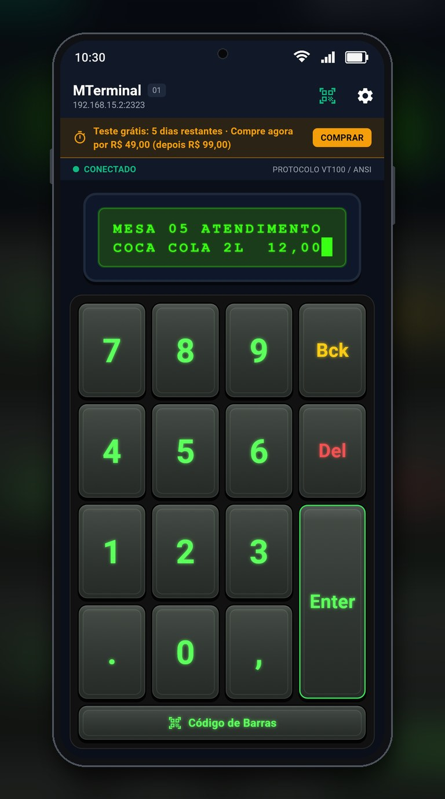
- Cabeçalho: nome do terminal e o endereço do servidor. À direita, o atalho do leitor de código de barras e a engrenagem das Configurações.
- Faixa do teste grátis: mostra quantos dias faltam e os preços (R$ 49,00 agora, R$ 99,00 depois). Toque em COMPRAR para abrir a compra. No último dia ela fica vermelha. Some depois da compra.
- Situação da conexão:
- ● CONECTADO: pronto para usar;
- ● CONECTANDO...: tentando falar com o sistema;
- ● ERRO CONEXÃO / DESCONECTADO: sem conexão; o motivo aparece logo abaixo. Toque na faixa para tentar de novo.
- Visor: mostra exatamente o que o sistema envia (mesa, produto, quantidade, mensagens). O bloco piscando indica onde vai aparecer o que você digitar.
- Teclado: números e teclas de ação, como num microterminal.
- Código de Barras: abre a câmera para ler produtos e comandas.
Se a rede cair ou o sistema for reiniciado, o MTerminal tenta reconectar sozinho. Ao voltar para o app depois de usar outro aplicativo, ele reconecta na hora.
6.Usando o teclado
O que cada tecla faz depende do seu sistema de automação, mas o padrão dos microterminais é este:
| Tecla | Para que serve |
|---|---|
| 0 a 9 | Digitar mesa, comanda, código do produto, quantidade ou senha do operador. |
| . e , | Separadores (ex.: quantidade fracionada ou peso), quando o sistema usar. |
| Enter | Confirmar o que foi digitado (lançar o item, abrir a mesa, avançar). |
| Bck | Apagar o último número digitado. |
| Del | Cancelar ou voltar (limpar a digitação, cancelar o item ou fechar a comanda, conforme o sistema). |
| Código de Barras | Ler um código pela câmera; o código é enviado ao sistema já com o Enter. |
Cada toque dá uma leve vibração e, se ativado, um bip. As teclas só são enviadas quando o terminal está CONECTADO.
7.Leitor de código de barras

- Toque em Código de Barras (ou no ícone de leitor no topo).
- Na primeira vez, o Android pede permissão para usar a câmera: toque em Permitir.
- Aponte a câmera para o código, deixando-o dentro do quadro verde. A leitura é automática: o leitor fecha sozinho e o código vai para o sistema.
Botões do leitor: ⚡ lanterna para ambientes escuros, trocar câmera (frontal/traseira) e ✕ para fechar sem ler.
Lê os formatos mais comuns: código de barras de produtos (EAN-13, EAN-8, UPC), Code 128, Code 39 e QR Code, entre outros.
As imagens da câmera são analisadas no próprio aparelho e não são gravadas nem enviadas a ninguém; só o número do código vai para o seu sistema.
8.Personalizar visor, teclas e cores
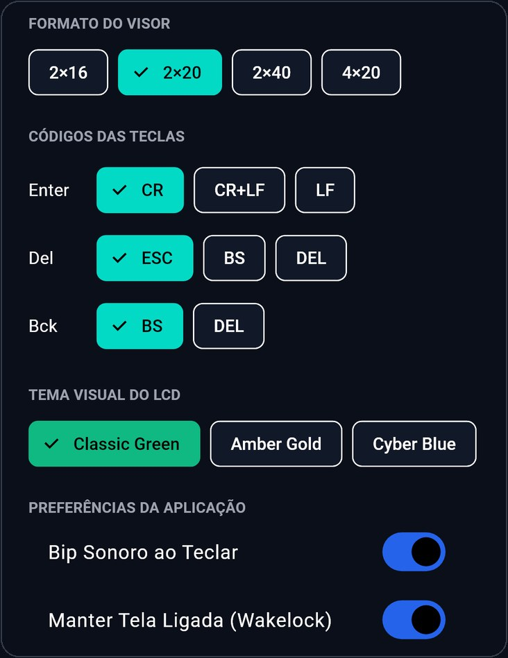
- Protocolo: deixe em VT100 / ANSI. Só mude para “STX/ETX com comandos” se o fornecedor do sistema pedir.
- Backspace do servidor apaga o caractere: deixe ligado (é o padrão dos microterminais).
- Formato do visor: quantas linhas e colunas o visor tem (2×16, 2×20, 2×40 ou 4×20). Use o mesmo configurado no sistema; o mais comum é 2×20.
- Códigos das teclas: o que as teclas Enter, Del e Bck enviam. O padrão (Enter = CR, Del = ESC, Bck = BS) serve para a maioria dos sistemas; só altere se o fornecedor orientar.
- Tema visual do LCD: a cor do visor e do teclado (veja abaixo).
- Bip sonoro ao teclar e Manter tela ligada: deixe a tela ligada para o aparelho não apagar durante o atendimento.
Depois de alterar, toque em “Salvar e Reconectar TCP”.
Temas de cor

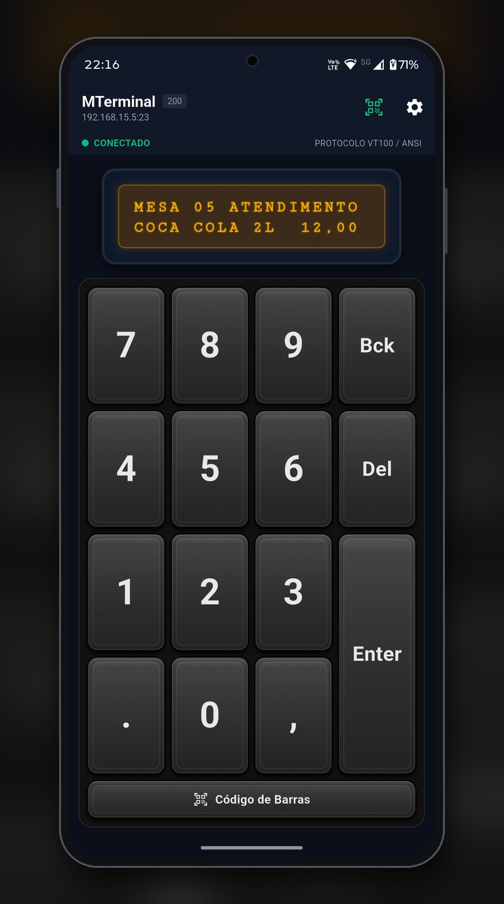
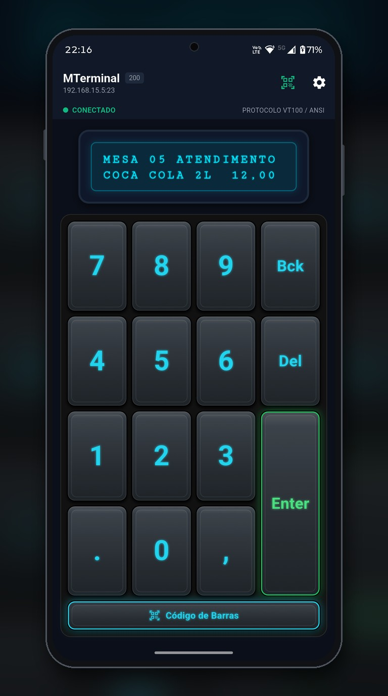
9.Licença e pagamento
| Situação | O que acontece |
|---|---|
| Teste grátis (7 dias) | Todas as funções liberadas. A faixa no topo mostra os dias restantes. |
| Comprando durante o teste | Licença vitalícia por R$ 49,00, pagamento único. |
| Depois dos 7 dias sem compra | O app fica bloqueado. A licença vitalícia passa a custar R$ 99,00, pagamento único. |
| Depois da compra | Liberado para sempre, sem mensalidades. Atualizações gratuitas pela Google Play. |
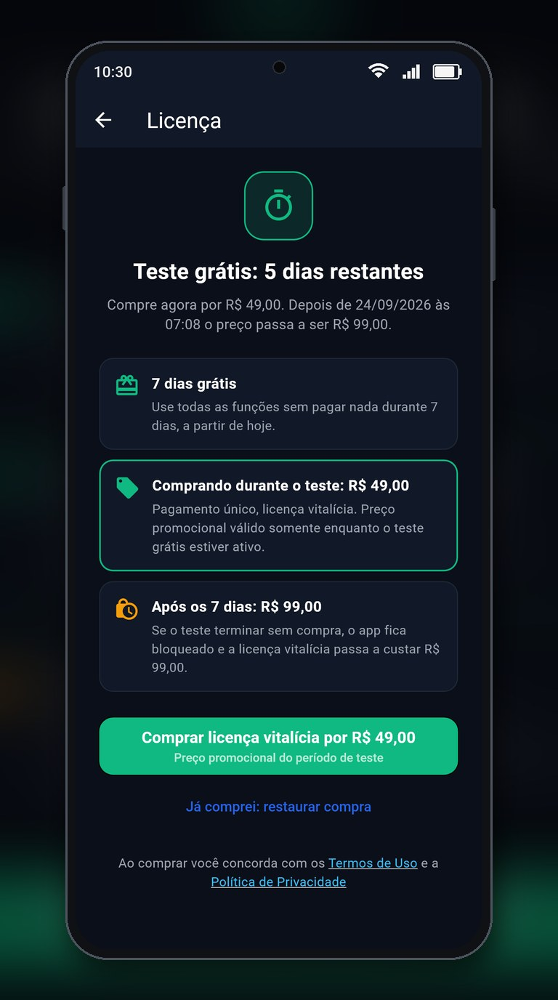
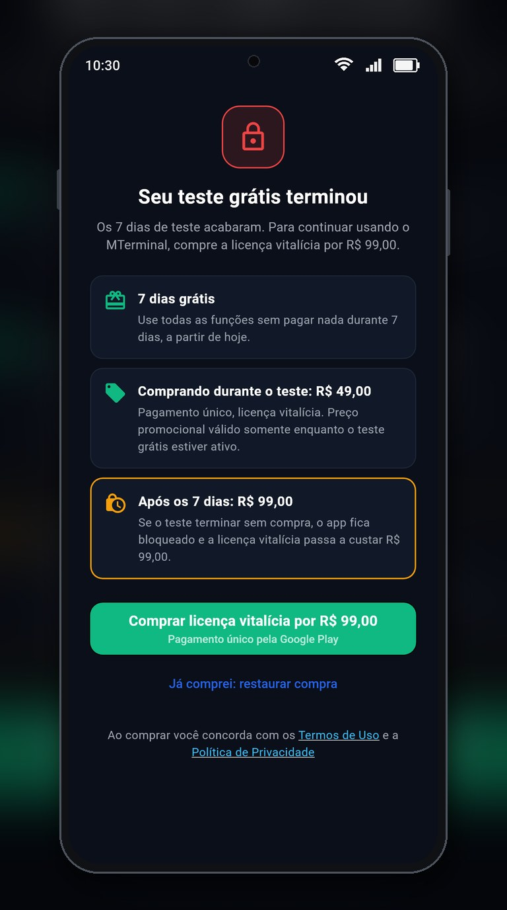
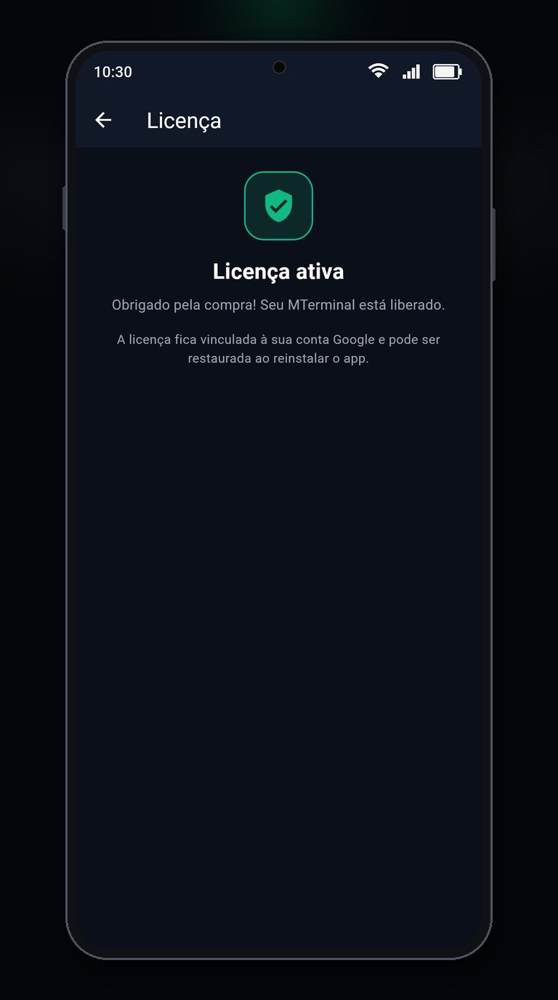
Como comprar
- Toque em COMPRAR na faixa do teste grátis, ou abra Configurações → Licença.
- Toque em “Comprar licença vitalícia”. O botão mostra o preço que vale no momento.
- Confirme o pagamento na janela da Google Play (cartão, Pix, saldo ou outro meio cadastrado na sua conta Google).
- Pronto: aparece “Licença ativa” e a faixa do teste some.
A licença fica vinculada à conta Google usada na compra. Entre com a mesma conta na Google Play, abra a tela de licença e toque em “Já comprei: restaurar compra”.
Reembolsos seguem a política da Google Play e o direito de arrependimento de 7 dias do Código de Defesa do Consumidor. Veja os Termos de Uso.
10.Problemas comuns
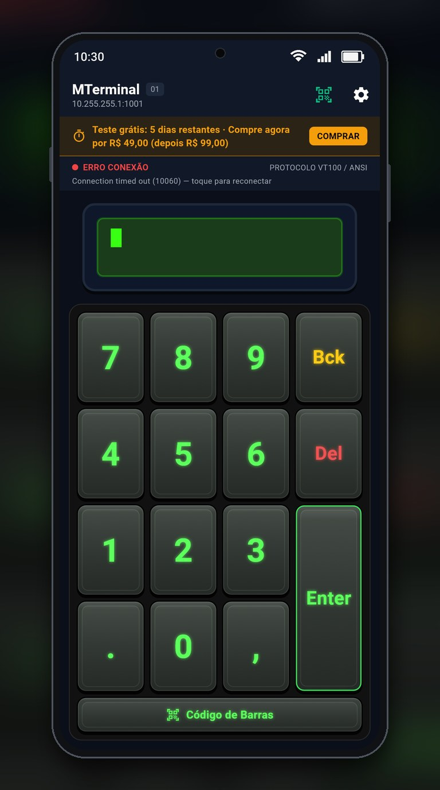
Aparece “ERRO CONEXÃO” ou “DESCONECTADO”
- Confira se o aparelho está no mesmo Wi-Fi do computador do sistema.
- Confira o IP do Servidor e a Porta nas Configurações.
- Verifique se o computador está ligado e o serviço de microterminais do sistema está aberto.
- Toque na faixa de situação para tentar de novo. Se persistir, o antivírus/firewall do computador pode estar bloqueando a porta: fale com o fornecedor do sistema.
Conecta, mas o visor mostra uma mensagem como “NÃO CONFIGURADO”
Essa mensagem vem do seu sistema: ele recebeu a conexão, mas não reconheceu o aparelho. Peça ao fornecedor para cadastrar o IP deste aparelho (mostrado nas Configurações). Se o IP mudou, fixe-o no roteador.
Aparecem caracteres estranhos no visor
O Protocolo ou o Formato do visor não combinam com o sistema. Volte para VT100 / ANSI e 2×20, ou use os valores indicados pelo fornecedor.
Enter, Del ou Bck não funcionam
O sistema espera outros códigos para essas teclas. Volte ao padrão (Enter = CR, Del = ESC, Bck = BS) em Configurações → Códigos das teclas, ou use os códigos informados pelo fornecedor.
O número digitado não some ao apertar Bck
Ligue “Backspace do servidor apaga o caractere” em Configurações → Protocolo.
A tela do aparelho apaga sozinha
Ligue “Manter Tela Ligada” nas Configurações. Em alguns aparelhos, também vale desativar a economia de bateria para o MTerminal nas configurações do Android.
Comprei, mas o app continua pedindo a compra
Verifique a internet e toque em “Já comprei: restaurar compra”. Pagamentos pendentes (ex.: boleto) liberam a licença assim que a Google Play confirmar.
11.Suporte
Dúvidas sobre o aplicativo, a licença ou o pagamento: suporte.dns.apps@gmail.com. No app, o atalho fica em Configurações → Sobre → Suporte.
Dúvidas sobre cardápio, mesas, operadores, impressão e regras do seu estabelecimento são do sistema de automação: fale com o fornecedor dele.
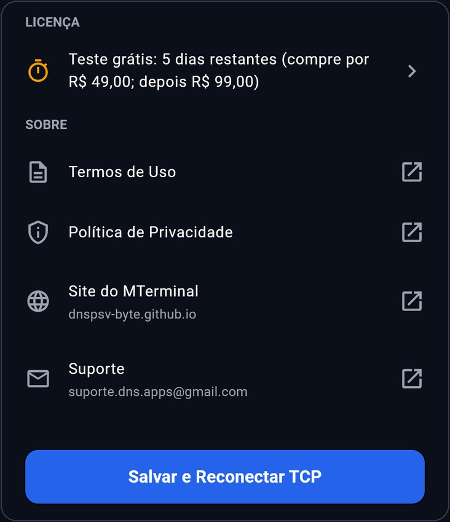